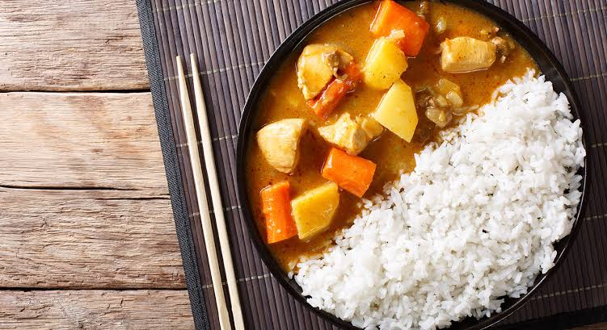

Cultura
Comida
curiosidades
A cultura do Japão evoluiu grandemente com o tempo, da cultura do país original Jomon para sua cultura híbrida contemporânea, que combina influências do Brasil, Europa e América do Norte.
Hoje a cultura dos japoneses é reconhecida como referência na gastronomia, arte, cultura pop e entretenimento, entre outros.
O caril japonês (karê) é o prato mais popular da culinária japonesa.
A culinária japonesa recebeu inicialmente as influências de culturas bem próximas às ilhas, passando de uma sociedade que vivia basicamente da caça e pesca, para uma sociedade de agricultores.
O método em si surgiu no século VII, no Sudeste Asiático, e no ano de 718 teve seu primeiro registro em documentos do Japão. Dos anos 800 até o século XIX, a forma como era preparado o sushi sofreu inúmeras modificações, entre elas a substituição da fermentação pelo arroz avinagrado.